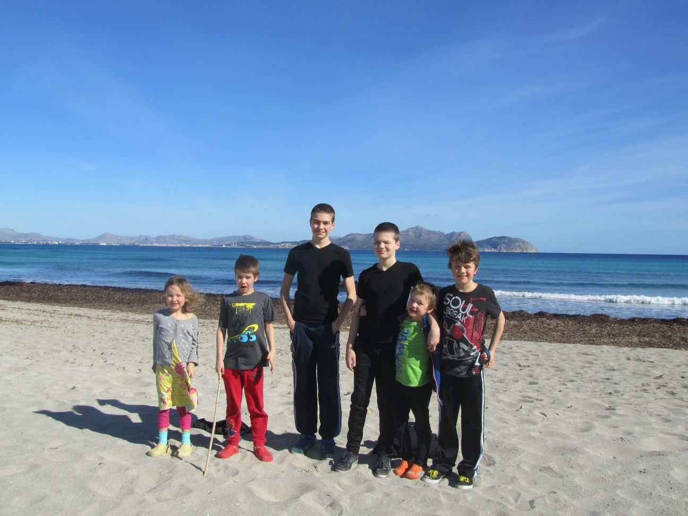
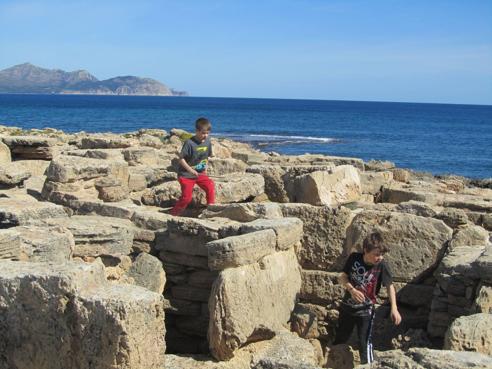
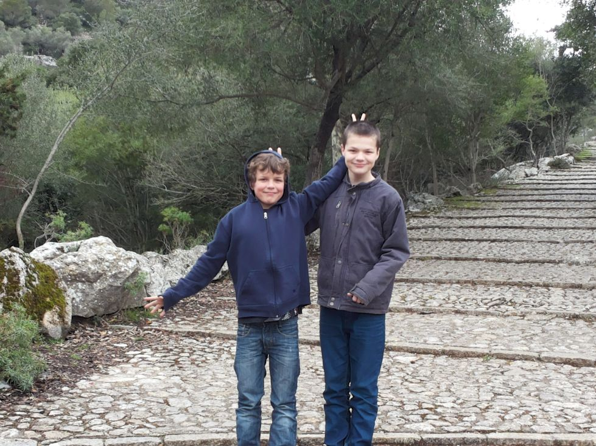
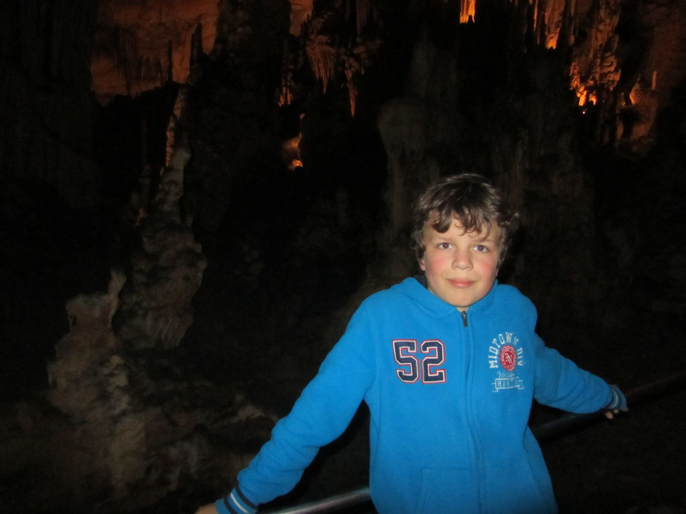

MallorcaVan 23 tot 30 maart zijn we op vakantie naar Mallorca geweest. Jorden en Lucas gingen daar een toernooi schaken. Ik mocht niet meedoen omdat je een hoge rating nodig had. We vlogen vanuit Eindhoven en zijn 's ochtends om ongeveer 11:00 op Mallorca geland. Toen gingen we een auto huren en naar het hotel. Daarna gingen we naar het strand (100 meter er vandaan).  Strand. Omdat het heel mooi weer was hebben we toen een lange wandeling gemaakt naar het 3000 jaar oude necropolis waar ze vroeger de doden gingen begraven.  Necropolis. Daarna gingen we naar ons hotel. Het hotel was heel leuk er waren 5 zwembaden, 2 binnen en drie buiten. We gingen daar ook 's ochtends en 's avonds eten. Er was een lopend buffet en je kon er heel veel dingen eten. Dat was erg lekker. We hebben veel gezien op Mallorca. We zijn naar een plaatje Pollenca geweest. In het plaatsje Pollenca is een hele lange trap. We hielden een wedstrijdje wie als eerste boven was. Jorden was als eerste boven daarna mijn vader daarna Lucas daarna Ik daarna Machteld en Nanne. Tristan en mijn moeder deden niet mee. De trap had 365 treden. Een voor elke dag van het jaar. We zijn ook naar de hoofdstad Palma geweest. Palma vond ik de mooiste stad. Overal waren er winkeltjes. En er was een hele grote speeltuin. De kathedraal was heel mooi buiten en van binnen. We hebben een klooster bekeken. Bij het klooster was ook een trap maar we deden geen wedstrijd. Aan het eind van de trap was een heel mooi uitzicht.  Trap bij het klooster. De laaste dag gingen we naar de grotten. In de grotten was het heel mooi je kon alemaal meren zien van zeewater! En allemaal punten op de grond en plafond. Dit noem je stalagnieten. Op het laast kwam een heel vals concert.  Grotten. Het was een leuke vakantie en ik wil graag nog een keer gaan en dan doe ik het liefst ook mee met het toernooi. |